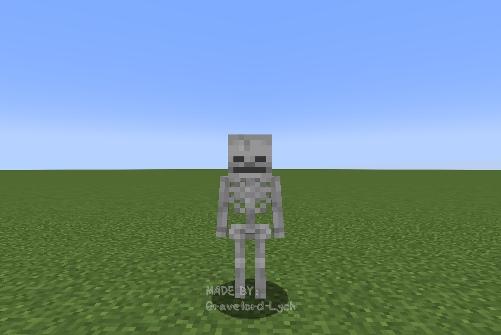
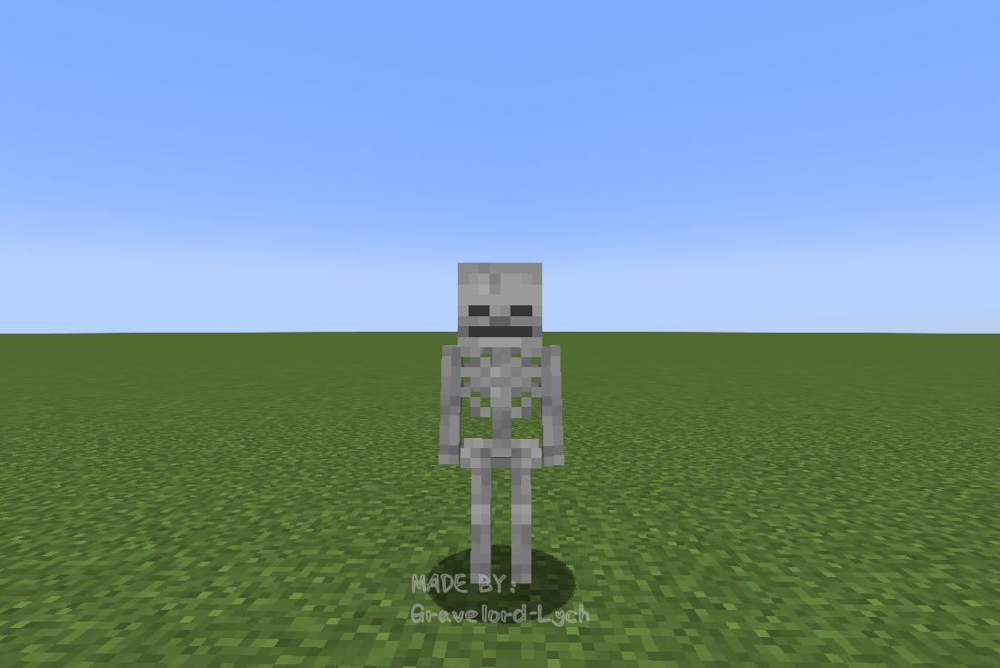
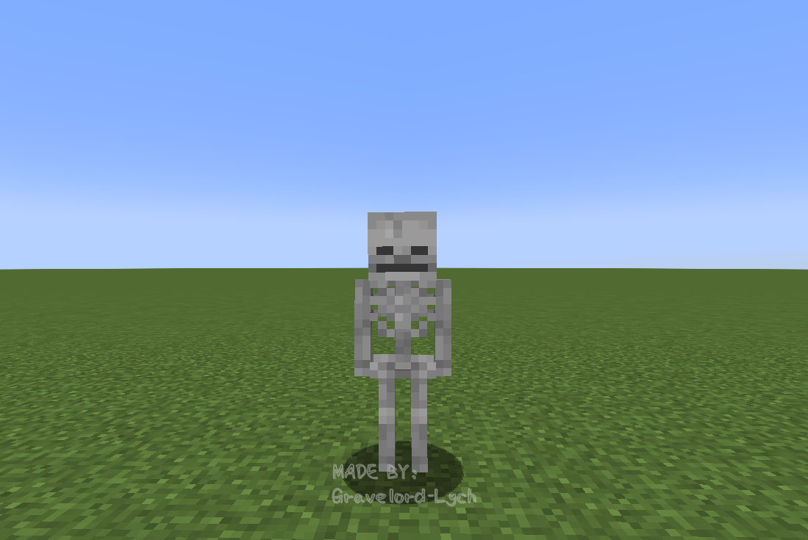
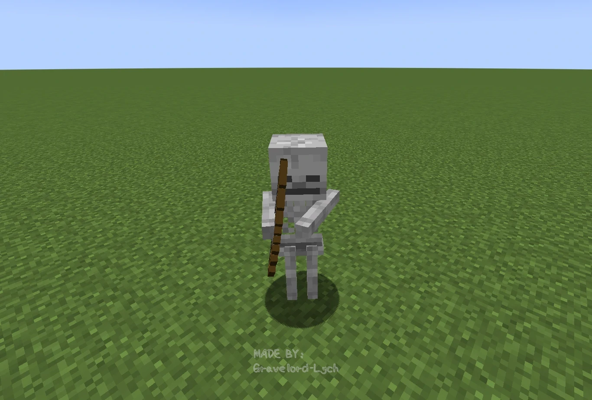
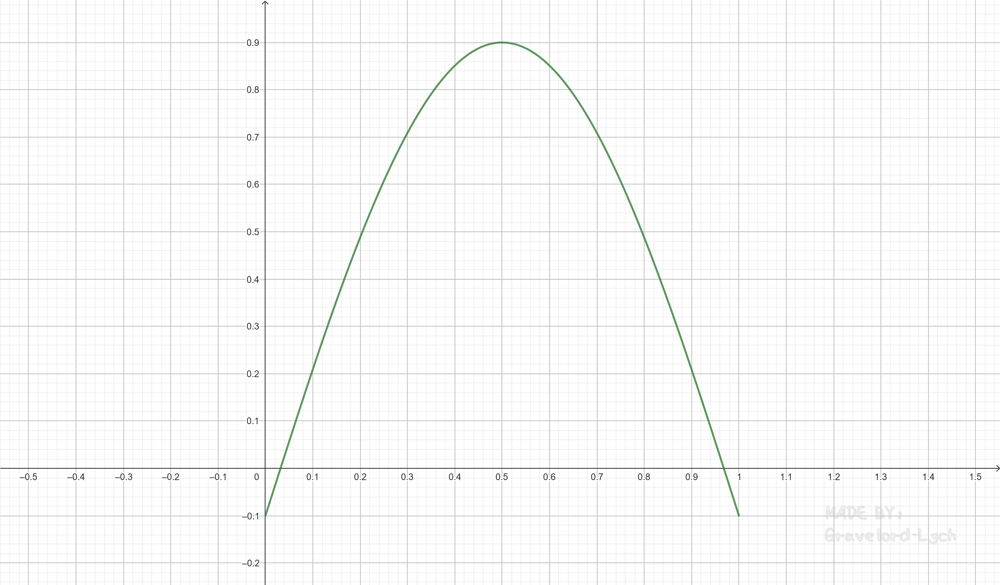

骷髅的模型（与渲染）
注：
之前讲末影人的模型的时候曾经提到过xRot，yRot和zRot，但EndermanModel中对这三个变量的运用比较简单，所以没有细讲。本节中可能会涉及到更加复杂的旋转角度调节，如果读者对ModelPart绕x、y、z轴的旋转不够熟悉，下面斜体的内容可能会有所帮助。
ModelPart中xRot，yRot，zRot分别表示绕ModelPart的相对坐标系的x、y、z轴旋转的弧度。以下三张图分别展示了骷髅头部绕x、y、z轴正向（指当xRot/yRot/zRot值增大时的旋转方向）旋转的效果。（图中的骷髅经过了特殊处理，不具有AI、装备且不会在阳光下燃烧）
x轴： 
y轴： 
z轴： 
我们先来探讨一下要想制作骷髅的模型，除了一些实体模型共有的东西以外，还需要什么。
容易发现，骷髅会使用弓箭，因此要对此做特殊处理。在SkeletonModel中，有如下的代码。
@Override
public void prepareMobModel(T skeleton, float limbSwing, float limbSwingAmount, float partialTicks) {
rightArmPose = HumanoidModel.ArmPose.EMPTY;
leftArmPose = HumanoidModel.ArmPose.EMPTY;
ItemStack stack = skeleton.getItemInHand(InteractionHand.MAIN_HAND);
if (stack.is(Items.BOW) && skeleton.isAggressive()) {
if (skeleton.getMainArm() == HumanoidArm.RIGHT) {
rightArmPose = HumanoidModel.ArmPose.BOW_AND_ARROW;
} else {
leftArmPose = HumanoidModel.ArmPose.BOW_AND_ARROW;
}
}
super.prepareMobModel(skeleton, limbSwing, limbSwingAmount, partialTicks);
}
这部分内容判断了骷髅是否在用弓箭攻击，如果是，则调整手臂的姿势为ArmPose.BOW_AND_ARROW。那如果姿势为ArmPose.BOW_AND_ARROW的时候，手臂的旋转又是怎样被处理的呢？
这就要看父类HumanoidModel中的poseRightArm和poseLeftArm方法在手臂姿势为ArmPose.BOW_AND_ARROW时的特有处理方式了。
poseRightArm：
rightArm.yRot = -0.1F + head.yRot;
leftArm.yRot = 0.1F + head.yRot + 0.4F;
rightArm.xRot = (-(float) Math.PI / 2F) + head.xRot;
leftArm.xRot = (-(float) Math.PI / 2F) + head.xRot;
poseLeftArm：
rightArm.yRot = -0.1F + head.yRot - 0.4F;
leftArm.yRot = 0.1F + head.yRot;
// 下面这两行和poseRightArm相同
rightArm.xRot = (-(float) Math.PI / 2F) + head.xRot;
leftArm.xRot = (-(float) Math.PI / 2F) + head.xRot;
这两个方法中都将两只手臂抬高了90°，且又加上了一个head.xRot来确保手臂随头部抬高而抬高。在yRot的调节上，两个方法的处理则是互相“对称”的。当“右撇子”的骷髅射箭时，显然左臂的偏移角度应该大一些，所以leftArm.yRot额外向内旋转了0.4弧度，而当“左撇子”的骷髅射箭时则正好相反。下图展示了一个“右撇子”骷髅手持弓进行攻击时的姿势（图中的骷髅经过了特殊处理，不会在阳光下燃烧）
“右撇子”骷髅手持弓进行攻击，可以很明显地发现它的左臂的旋转幅度更大 
前面说过骷髅是一种既能远程攻击又能近战的生物，那么骷髅近战的时候手臂又是如何处理的呢？我们可以在setupAnim中找到答案。
@Override
public void setupAnim(T skeleton, float limbSwing, float limbSwingAmount, float ageInTicks, float netHeadYaw, float headPitch) {
super.setupAnim(skeleton, limbSwing, limbSwingAmount, ageInTicks, netHeadYaw, headPitch);
ItemStack mainHandItem = skeleton.getMainHandItem();
if (skeleton.isAggressive() && (mainHandItem.isEmpty() || !mainHandItem.is(Items.BOW))) {
// attackTime的计算方式：已经摆动（swing）手臂的时长/摆动手臂的总时长
// 注意attackTime在摆动手臂时才取非零（介于0~1间且不取1）的值，因此在骷髅未摆动手臂进行攻击时以下两个局部变量的值均为0
float f = Mth.sin(attackTime * (float) Math.PI);
float f1 = Mth.sin((1.0F - (1.0F - attackTime) * (-attackTime)) * (float) Math.PI);
// 重置了zRot的值
rightArm.zRot = 0.0F;
leftArm.zRot = 0.0F;
// 在发动近战攻击时，让手臂沿y轴小幅转动
rightArm.yRot = -(0.1F - f * 0.6F);
leftArm.yRot = 0.1F - f * 0.6F;
// 将手臂抬起90°
rightArm.xRot = -(float) Math.PI / 2F;
leftArm.xRot = -(float) Math.PI / 2F;
// 在发动近战攻击时，将手臂抬得更高
rightArm.xRot -= f * 1.2F - f1 * 0.4F;
leftArm.xRot -= f * 1.2F - f1 * 0.4F;
// 该方法用于给手臂沿x、z轴添加规律的小幅摆动，使手臂更加自然
AnimationUtils.bobArms(rightArm, leftArm, ageInTicks);
}
}
附上rightArm.yRot和rightArm.xRot随attackTime变化的图象。
rightArm.yRot-attackTime图象：

rightArm.xRot-attackTime图象：

骷髅的手臂较细，所以SkeletonModel中还重写了translateToHand方法，给了骷髅拿在手上的东西一个小小的向内的位置偏移。
@Override
public void translateToHand(HumanoidArm arm, PoseStack stack) {
float offset = arm == HumanoidArm.RIGHT ? 1.0F : -1.0F;
ModelPart part = getArm(arm);
part.x += offset;
part.translateAndRotate(stack);
part.x -= offset;
}
骷髅的渲染类SkeletonRenderer没有什么重要的地方，而且基本上与僵尸是一致的，这里就不放代码了。
本节的内容就是这些了哦，下一节将会再讲一个实战。